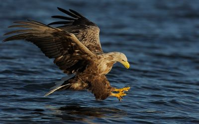

|  |
HavsörnTalgoxe (Parus major) är en fågel inom ordningen tättingar och familjen mesar. Den är vanlig i hela Europa, västra, centrala och norra Asien och delar av Nordafrika och förekommer i alla sorters skogslandskap. Den är vanligen stannfågel och de flesta talgoxar flyttar inte förutom under extremt hårda vintrar. Talgoxen är den mest utbredda arten i släktet Parus. Dess taxonomi är komplicerad och omdiskuterad, och den delas upp i en mängd underarter, som i sin tur delas in i tre till fyra underartsgrupper. Vissa auktoriteter behandlar tre av dessa grupper som egna arter, exempelvis turkestanmes. |